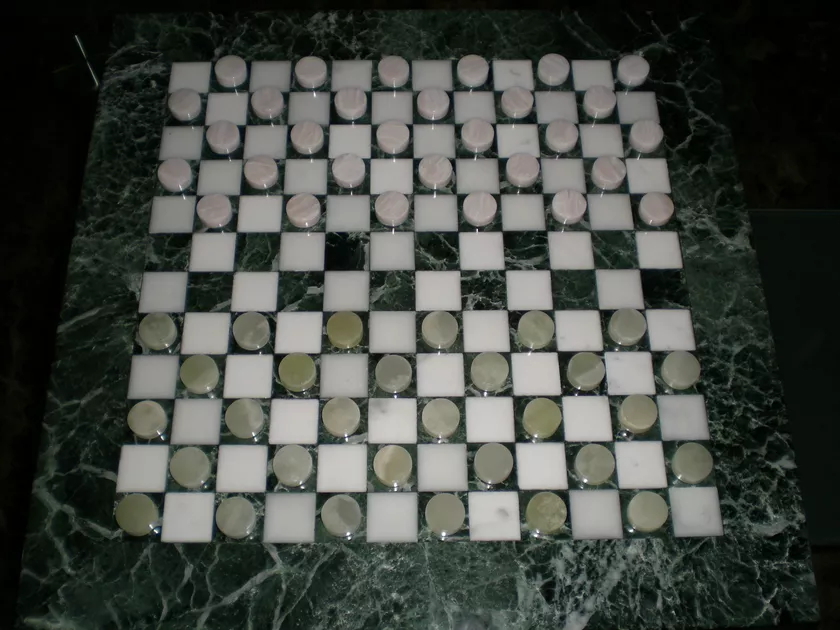

Draughts
If you have been paying attention to the page you may seen the word Draughts a few times. the ression for this is that, much like football and soccer, Amarica calls it diffrent becuse they want to be unique and as such Draughts is its intertational name.
But the name is not the only thing that is changed, depending on where you live the gameplay is diffrent. some stand outs are two additional movement options that are not present in some versions, they are flying-kings and the ability for normal pieces to capture backwards.
normal pieces capturing backwards is self explanitory but flying-kings needs an,admididly rather simple, explenation. simply put they move simmularly to bishops from chess and can capture from almost anywhere. aside from that the board's size chages from 8X8 to 12X12.